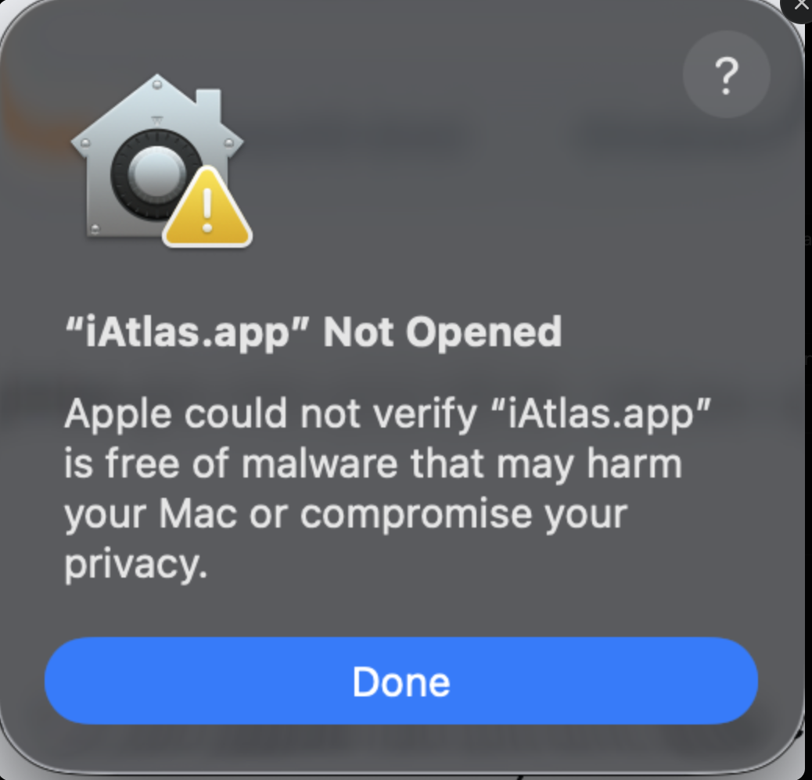
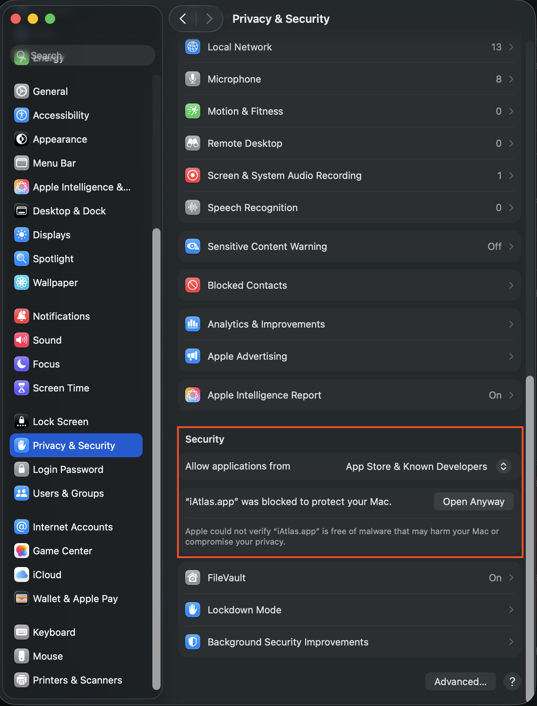

Bắt đầu
Tải và cài đặt iAtlas
Chỉ cần tải app và một tài khoản Claude. Mọi công cụ phân tích do iAtlas tự tải trong lần mở đầu tiên — bạn không phải mở terminal hay cài gì thêm. Nút Tải iAtlas góc trên bên phải đã chọn bản phù hợp máy bạn.
Yêu cầu
- Máy macOS (Apple Silicon hoặc Intel) hoặc Windows x64. Chưa hỗ trợ Linux.
- Tài khoản Claude Pro hoặc Max Đăng nhập ngay trong app ở bước cuối. Nếu không có, có thể dán Anthropic API key trong Settings.
Hướng dẫn theo hệ điều hành
Tab mặc định theo máy bạn đang dùng. Đổi tab nếu cần cài trên máy khác.
-
Tải bộ cài
Bấm Tải iAtlas góc trên phải để tải
iAtlas-1.0.2-macos-arm64.dmg. Bản khác xem Releases. -
Cài app
Mở file DMG → kéo iAtlas vào thư mục Applications.
Lần đầu mở, macOS thường báo “iAtlas.app” Not Opened — bấm Done,
vào System Settings → Privacy & Security, kéo xuống mục Security,
bấm Open Anyway rồi mở lại app.

1. Lần đầu mở, macOS báo như thế này — bấm Done. 
2. Vào Privacy & Security, kéo xuống mục Security → bấm Open Anyway. - Mở iAtlas và đăng nhập Claude Màn Setting up iAtlas tự tải hết công cụ cần thiết (kể cả Claude Code). Xong, bấm Log in to Claude → đăng nhập tài khoản Pro/Max trên trình duyệt vừa mở → quay lại app. App tự vào màn chính.
Bấm Retry, hoặc Continue anyway để vào app — chỉ tính năng cần phần đó tạm chưa dùng được, app sẽ thử lại vào lần sau.
-
Tải bộ cài
Vào Releases
và tải file
iAtlas-*-macos-x64.dmg. -
Cài app
Mở DMG → kéo iAtlas vào Applications.
Lần đầu mở, macOS thường báo “iAtlas.app” Not Opened — bấm Done,
vào System Settings → Privacy & Security → mục Security →
Open Anyway, rồi mở lại app.
1. Lần đầu mở, macOS báo như thế này — bấm Done. 2. Vào Privacy & Security, kéo xuống mục Security → bấm Open Anyway. - Mở iAtlas và đăng nhập Claude Đợi màn Setting up iAtlas tải xong, bấm Log in to Claude và đăng nhập tài khoản Pro/Max trên trình duyệt.
Bấm Retry, hoặc Continue anyway để vào app và thử lại sau.
-
Tải bộ cài
Bấm Tải iAtlas để tải
iAtlas-1.0.0-windows-x64.exe. Bản khác xem Releases. - Cài app Chạy file EXE và làm theo wizard. Nếu SmartScreen cảnh báo: More info → Run anyway.
- Mở iAtlas và đăng nhập Claude Màn Setting up iAtlas tự tải hết công cụ (kể cả Claude Code). Xong, bấm Log in to Claude → đăng nhập Pro/Max trên trình duyệt → quay lại app.
Bấm Retry, hoặc Continue anyway để vào app. Firewall có thể hỏi quyền mạng cho Chromium — cho phép nếu bạn dùng crawl web.
iAtlas tự cài những gì?
Chạy một lần trong màn Setting up iAtlas, không cần thao tác:
| Thành phần | Dùng để làm gì | Dung lượng |
|---|---|---|
| Bộ giải mã APK | apktool, jadx, radare2 và JDK đi kèm | có sẵn trong bộ cài |
| Claude Code | AI mà agent dùng — cài hộ, bạn chỉ đăng nhập một lần | ~80 MB |
| Python | Nền chạy cho công cụ crawl và React Native | ~30 MB |
| Playwright + Chromium | Trình duyệt cho phần crawl web | ~310 MB |
| hermes-dec | Đọc app viết bằng React Native | ~3 MB |
Toàn bộ nằm trong thư mục ~/.ai-crawler/
(Windows: %USERPROFILE%\.ai-crawler\) cùng dữ liệu các lần chạy.
Xong rồi làm gì?
Setup xong app mở thẳng màn Agent. Tạo project APK (nhập package name) hoặc Web (nhập địa chỉ trang), bấm chạy rồi hỏi agent.